|
por Gustavo Leão
 Hehe,
é engracado. Você tem que curtir a ironia disso. Eu, que obtive
os meus 15 minutos (ou foram segundos?) de fama por aqui ao
criticar a atual decadência criativa de Jornada nas Estrelas
nas telas de TV ou cinema sob o comando de Rick Berman e Brannon
Braga, venho agora defender o odiado filme "Jornada nas
Estrelas V: A Última Fronteira" ("Star Trek V: The
Final Frontier"), considerado por 9 entre 10 trekkies como o
pior filme da história do franchise... ou ainda, o pior filme de
todos os tempos da história do cinema. Hehe,
é engracado. Você tem que curtir a ironia disso. Eu, que obtive
os meus 15 minutos (ou foram segundos?) de fama por aqui ao
criticar a atual decadência criativa de Jornada nas Estrelas
nas telas de TV ou cinema sob o comando de Rick Berman e Brannon
Braga, venho agora defender o odiado filme "Jornada nas
Estrelas V: A Última Fronteira" ("Star Trek V: The
Final Frontier"), considerado por 9 entre 10 trekkies como o
pior filme da história do franchise... ou ainda, o pior filme de
todos os tempos da história do cinema.
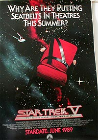 Como
alguém como eu, que criticou até cansar a fraca Voyager e
a péssima Enterprise, pode gostar de um filme como esse?
Como posso eu, a mesma pessoa que condena aos quatro ventos a visão
de Jornada dos "autores" Berman e Braga, posso
defender a visão de Jornada do "autor" Bill
Shatner? Seria sarcasmo da minha parte? Uma piada? Ou finalmente
eu fiquei louquinho da silva, após ler demais os livros do
Shatner? Seria eu, afinal de contas... um... argh... trekkie?
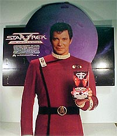 Bom,
para começar, devo dizer que eu sempre gostei de William Shatner
e de sua atuação como James Tiberius Kirk. Mesmo quando ele
esteve em sua pior fase de canastrão nos péssimos episódios do
terceiro ano da Série Clássica, ou quando ele apareceu em
cadeia nacional de televisão no programa "Saturday Night
Live" dizendo aos trekkies "Get a Life!". Diabo, eu
curtia Shatner até na série "Carro Comando"! Ele
sempre me pareceu um cara legal, bem-humorado e criativo, apesar
do que os George Takeis e Jimmy Doohans da vida falam dele.
Bobagem, deve ser inveja. Para mim, Shatner, assim como Leonard
Nimoy, Harve Bennett e Gene Coon, foi uma das grandes fontes de
criatividade por trás das câmeras em Jornada nas Estrelas
e tem o crédito de ter dado à série original muito de seu
carisma, humor e qualidade.
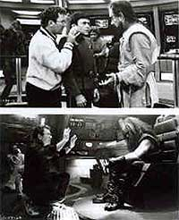 Sim,
é verdade que Shatner já foi acusado por seus colegas de elenco,
pelos fãs, pela imprensa e até pelo falecido Gene Roddenberry de
ser um egomaníaco arrogante, de ser um ator pobre e canastrão,
de não escrever seus roteiros e livros e roubar as idéias e os
créditos dos outros, etc. e tal. Mas por que estou lembrando
disso tudo? Porque não é meu objetivo com essa coluna ignorar o
que se fala de Shatner ou de seu roteiro e sua direção em "Jornada
nas Estrelas V".
Sim, Shatner pode ser um ator e diretor difícil de se lidar, pode
ser um cara de personalidade forte. Sim, "Jornada V"
tem uma produção capenga, efeitos especiais de quinta categoria
(aí, seo Shatner, como a ILM fez falta!), uma direção de
fotografia pastel e sem graça do veterano Andrew Lazlo
("Viagem Insólita") e uma direção de arte pobre e
feia (de novo, como a ILM fez falta).
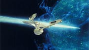
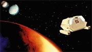
O objetivo dessa coluna é dar às pessoas uma visão diferente do
filme, mas sem negar os seus defeitos e erros, seja um poço de
turboelevador com 78 andares numa Enterprise-A que possui apenas
21 andares ou uma nave estelar que leva apenas poucas horas para
atingir o distante centro da galáxia (Super-Trans-Dobra?). Tais
erros e defeitos já renderam e ainda vão render inúmeras críticas
e gozações, e não é o objetivo dessa coluna chover de novo
nesse molhado. Vamos inovar e dar uma olhada nos bons pontos de "A
Última Fronteira", na companhia de alguém (eu) que está
disposto a admitir, em público, que gosta do filme (ei, já que
estou admitindo isso, vou dizer que também gosto muito de "Jornada
nas Estrelas: O Filme" ("Star Trek: The Motion
Picture") e "Generations", por isso podem me
gozar à vontade).
Eu me lembro de quando vi "Jornada V" no cinema
pela primeira vez, no dia da estréia, em setembro de 1989, num
cinema de um shopping aqui de Belo Horizonte, junto com uma meia dúzia
de amigos. Lembro-me de ter gostado do filme, e mesmo os péssimos
efeitos especiais da Bran Ferren & Associates não me cegaram
para o que o filme tinha de bom. Para começar, a excelente trilha
sonora de Jerry Goldsmith é a primeira coisa que me vem a cabeça
quando me lembro do filme. A música de "Jornada V",
para mim, é um dos pontos altos da carreira de Goldsmith
(juntamente, é claro, com sua música para "O Filme").
Os temas que Goldsmith escreveu, como na escalada de Kirk em
Yosemite ou na aproximação da nave auxiliar em Sha-Ka-Ree ou no
aparecimento de "Deus" são... bem, se me permitem o
trocadilho... divinos. Infelizmente, em suas mais recentes trilhas
para Jornada (como em "Primeiro Contato" e
"Insurreição"), Goldsmith nao repetiu o poder e
a melodia de suas trilhas para Jornada I e V, talvez
porque Rick Berman nao seja fã da boa música. (O CD da trilha
sonora de Akiraprise é a pior música de elevador que eu já
ouvi. Mas como a esperança é a última que morre, talvez
Goldsmith faça uma trilha espetacular para "Nemesis".
Talvez.)
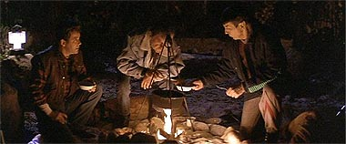
O outro ponto forte do filme é a maneira como Shatner retrata a
amizade de James Kirk, Spock e Leonard 'Bones' McCoy. Seja
cantando "Row Row Your Boat", ou meditando sobre sua
mortalidade, ou mesmo enfrentando seus medos e traumas, nunca
antes a amizade dos três foi retratada de forma tão humana como
em "Jornada V". Shatner, grande amigo de Leonard
Nimoy e DeForest Kelley na vida real, soube transpor essa amizade
com perfeição para seus personagens. "Jornada V"
não é um filme sobre "a Enterprise vai procurar Deus"
ou "a Enterprise enfrenta os Klingons", mas sim um filme
sobre a amizade de três homens bem diferentes. Aí residem o
charme e a magia do filme, não nos efeitos especiais, mas sim na
dramaticidade e nas atuações de Shatner, Nimoy e Kelley. A cena
em que Kirk, Spock e McCoy são forçados por Sybok a enfrentar
seus medos e traumas é um dos momentos mais fortes e dramáticos
que os três atores protagonizaram e permanece um dos meus
momentos favoritos dos filmes de Jornada.
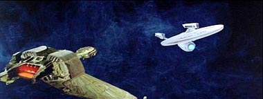
Apesar de Shatner dar bons momentos a Sulu, Chekov, Scotty e Uhura,
é óbvio que ele considera o "grande trio" a real família
de Jornada --o foco do roteiro é claramente em Kirk, Spock
e McCoy. Ele vai fundo nos personagens e isso faz com que "Jornada
V", sem dúvida, seja sobre a aventura "humana"
e os personagens. Já a Jornada atual, de Berman e Braga,
é muito mais sobre anomalias, paradoxos e alienígenas bizarros.
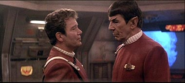
Outro ponto forte do roteiro de Shatner e David Loughery é a
nostalgia com que a Série Clássica é tratada. Kirk
dizendo "tudo o que peço é uma nave... e uma estrela para
me guiar" ou "eu sinto falta da minha velha
cadeira" e a placa com a frase "audaciosamente indo onde
nenhum homem jamais esteve" são pequenas e merecidas
homenagens à série de TV onde tudo começou. E Kirk enfrentando
um "falso deus" é um dos clichês clássicos de Jornada
nas Estrelas: basta lembrar de Kirk enfrentando o
"deus" Gary Mitchell no segundo piloto da série ou o
"deus grego" Apolo em "Who Mourns for Adonais".
O filme também traz novos e importantes toques à mitologia de
Jornada, como Kirk dizendo que "eu sempre soube que morreria
sozinho" (ou seja, sem a companhia de Spock e McCoy --algo
que foi explorado em "Generations" e nos livros
de Shatner sobre o retorno do capitão Kirk) e a noção que o
centro da galáxia também possui uma grande barreira, como a
barreira existente no limiar da galáxia e descoberta pela
Enterprise original no segundo piloto da série. É engraçado
lembrar que, quando a Enterprise-D visita o centro da galáxia no
episódio da Nova Geração "The Nth Degree",
Picard se vê face a face com uma raça poderosa que parece uma
cabeça gigante com barba branca, muito similar ao
"Deus" de Sha-Ka-Ree. Coincidência? Você decide.
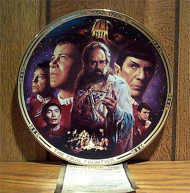
Mais uma qualidade do filme na minha opinião é a presença do
ator Lawrence Luckinbill como Sybok, o meio-irmão de Spock. Sybok
nao é um vilão, mas um bom homem, um filósofo com um sonho de
descobrir "novos mundos". Luckinbill é um excelente
ator e trouxe uma certa profundidade e paixão ao papel difícil
do Vulcano emotivo e rebelde. Sybok é sem duvida um personagem
mais interessante e tridimensional do que a Rainha Borg ou Rua'fo,
que são apenas "vilões da semana".
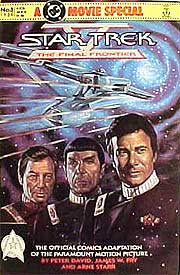 Bem,
se você não vai com a cara de Shatner ou considera "Jornada
V" um lixo, não serão as minhas palavras e opinião
aqui mostradas que irão mudar a sua. De qualquer forma, eu
recomendo que você assista ao filme de novo e dê outra chance à
ovelha negra dos filmes de Jornada. O final, devido à falta de
dinheiro e aos efeitos péssimos, saiu ruim que dói, é verdade.
Mas não deixe que isso lhe estrague o apetite. Eu mesmo, durante
muito tempo, defendi que "Jornada V" merecia uma
"Edição do Diretor", na qual novos e melhores efeitos
especiais fossem criados para o filme e Shatner pudesse restaurar
cenas como a do final, em que Kirk enfrenta o Demônio (sim, Satanás
em pessoa!) e sua legião de gárgulas de pedra --cenas que foram
cortadas quando os efeitos de terceira não convenceram Shatner e
o produtor Harve Bennett.
Já escrevi diversos artigos sobre isso no TrekWeb, e
agora, com o sucesso da versão do diretor de "Jornada nas
Estrelas: O Filme" e "Jornada nas Estrelas II: A
Ira de Khan", talvez Shatner possa dar a "Jornada
V" os efeitos especiais, a edição e a produção
detalhada que o filme merece. De todo modo, obrigado, Bill, pelo
"melhor dos tempos" e pelo "pior dos tempos".
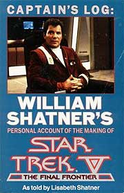 P.S.:
Se você se interessar em pesquisar a verdadeira história dos
bastidores do filme e a verdade sobre as batalhas e dificuldades
que Shatner enfrentou para trazer sua história às telas, assim
como sua paixão pelo roteiro, existem dois sensacionais livros
cuja leitura é obrigatória não só para trekkies, mas para os fãs
de cinema em geral. O primeiro é "Star Trek Movie Memories",
escrito pelo próprio Shatner e pelo escritor Chris Kreski e
disponível em português com o título "Jornada nas Estrelas
- Memórias dos Filmes". O segundo é o sensacional livro
"Captain's Log - The Making of Star Trek V as Told by William
Shatner", escrito pela filha de Shatner, a escritora Lisabeth
Shatner. Publicado em 1989 pela Pocket Books, quando Gene
Roddenberry ainda estava vivo e antes que Rick Berman o sucedesse
como o "dono" de Jornada, "Captain's Log"
é um ótimo "sem censura" e um dos melhores livros já
feitos sobre os bastidores do franchise. Vale a conferida.
|